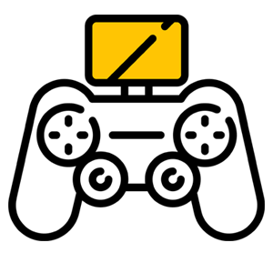

Пульт радиоуправления¶
Данный раздел описывает процесс управления квадрокоптером "Пионер" с помощью аппаратуры FlySky i6S.
По умолчанию пульт готов к эксплуатации и не требует дополнительной настройки или привязки.
Квадрокоптер совместим с пультами управления, которые поддерживают протокол PPM и работают с приемником FlySky.
Используйте стики для управления полетом квадрокоптера.
Используйте переключатель режимов для выбора режима полета квадрокоптера.
Чтобы включить пульт, нажмите и удерживайте кнопки включения/выключения одновременно.
Изменение режима работы пульта:
Используйте переключатель SWB. Переключатель в верхнем положении – Режим управления с пульта – выбор режима полета переключателем SWC.
Переключатель в среднем положении – режим автоматического удержания положения с системой навигации или с GPS – Управление квадрокоптером происходит с пульта.
Переключатель в нижнем положении – режим автоматического полета по программе.
Во время полета по программе пилот может всегда взять управление на себя и переключиться в режим ручного управления.
Изменение режима полета:
Используйте переключатель SWC на пульте. Переключатель в верхнем положении – Режим стабилизации – Стик газа отвечает за изменение уровня мощности, подаваемой на моторы.
Переключатель в среднем положении – Режим удержания высоты – квадрокоптер автоматически удерживает высоту, стик газа отвечает за изменение вертикальной скорости.
Если поставить стик газа по центру, квадрокоптер будет удерживать высоту. Если переместить стик вверх, квадрокоптер начнет подниматься, чем дальше от центра, тем быстрее.
Если переместить стик газа вниз, квадрокоптер начнет снижаться. Переключатель в нижнем положении – Режим удержания высоты и курса.
Управление высотой происходит как в предыдущем режиме. Отличие в том, что квадрокоптер запоминает направление курса в момент включения моторов.
Далее можно вращать квадрокоптер по углу рыскания, при этом направления вперед/назад и влево/вправо будут неизменны.
Attention
Для определения высоты полетный контроллер использует барометр, который измеряет атмосферное давление. Если давление воздуха меняется, аппарат будет реагировать на изменение давления, а не на изменения фактической высоты.